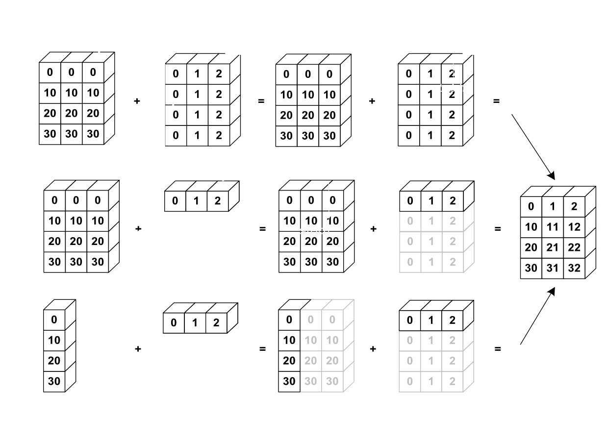

NumPy Arrays
python objects:
- high-level number objects: integers, floating point
- containers: lists (costless insertion and append), dictionaries (fast lookup)
Numpy provides:
- extension package to Python for multi-dimensional arrays
- closer to hardware (efficiency)
- designed for scientific computation (convenience)
- Also known as array oriented computing
import numpy as npa = np.array([0, 1, 2, 3, 4, 5])
print(a)
print(np.arange(10))# Python lists
L = range(1000)
%timeit [i**2 for i in L]a = np.arange(1000)
%timeit a**21. Creating arrays
1.1. Manual Construction of arrays
# 1-D
a = np.array([0, 1, 2, 3, 4])
print(a)
a# Dimensions
a.ndim# shape
a.shapelen(a)# 2D 3D
b = np.array([[0, 1, 2], [3, 4, 5]])
bb.ndimb.shapelen(b)c = np.array([[[0, 1], [2, 3]], [[4, 5], [6, 7]]])
cc.ndimc.shape1.2 Functions for creating arrays
# arange
a = np.arange(10)
ab = np.arange(1, 10, 2)
b# linspace
a = np.linspace(0, 1, 6)
a# common arrays
a = np.ones((3, 3))
ab = np.zeros((3, 3))
bc = np.eye(3)
cc = np.eye(3, 3)
c# diag
a = np.diag([1, 2, 3, 4, 5])
aa = np.random.rand(4)
a2. Basic DataTypes
a = np.arange(10)
a.dtypea = np.arange(10, dtype='float64')
aa = np.zeros((3, 3))
print(a)
a.dtyped = np.array([1+2j, 2+4j])
print(d.dtype)
d.dtypeb = np.array([True, False, True, False])
print(b.dtype)s = np.array(['Mash', 'Ray'])
s.dtypeEach built-in data type has a character code that uniquely identifies it.
'b' − boolean
'i' − (signed) integer
'u' − unsigned integer
'f' − floating-point
'c' − complex-floating point
'm' − timedelta
'M' − datetime
'O' − (Python) objects
'S', 'a' − (byte-)string
'U' − Unicode
'V' − raw data (void)
3. Indexing and Slicing
3.1 Indexing
a = np.arange(10)
print(a[5])a = np.diag([1, 2, 3])
print(a)
print(a[2, 2])
a[2, 1] = 5
a3.2 Slicing
a = np.arange(10)
a[1:8:2] # [startindex: endindex(exclusive) : step]a = np.arange(10)
a[5:] = 10
ab = np.arange(5)
print(5)
a[5:] = b[::-1]
print(a)4. Copies and Views
a = np.arange(10)
ab = a[::2]
bnp.shares_memory(a, b)b[0] = 10
baa = np.arange(10)
c = a[::2].copy()
cnp.shares_memory(a, c)
c[0] = 10
print(c)
print(a)5. Fancy Indexing
a = np.random.randint(0, 20, 15)
amask = (a % 2 == 0)
maskextract_from_a = a[mask]
extract_from_aa[mask] = -1
aa = np.arange(0, 100, 10)
aa[[2, 3, 2, 4, 2]]a[[9,7]] = -200
print(a)Elementwise Operations
1. Basic Operations
with scalars
a = np.array([1, 2, 3, 4])
a + 1a * 2a ** 2All arithmetic operates elementwise
b = np.ones(4) + 1
ba - ba * b# Matrix Multiplication
c = np.diag([1, 2, 3, 4])
print(c * c)
print("**************")
print(c.dot(c))a = np.array([1, 2, 3, 4])
a = np.array([5, 2, 2, 4])
a == ba > ba = np.array([1, 2, 3, 4])
b = np.array([5, 2, 2, 4])
c = np.array([1, 2, 3, 4])
print(np.array_equal(a, b))
print(np.array_equal(a, c))Logical Operations
a = np.array([1, 1, 0, 0], dtype=bool)
b = np.array([1, 0, 1, 0], dtype=bool)np.logical_or(a,b)np.logical_and(a, b)Transacendental functions:
a = np.arange(5)np.sin(a)np.log(a)np.exp(a)Basic Reductions
computing sums
x = np.array([1, 2, 3, 4])
np.sum(x)x = np.array([[1, 1], [2, 2]])xx.sum(axis=0)x.sum(axis=1)Other reductions
x = np.array([1, 3, 2])x.min()x.max()x.argmin()x.argmax()Logical Operations
np.all([True, True, False])np.any([True, False, False])a = np.zeros((50, 50))
np.any(a != 0)np.all(a == a)a = np.array([1, 2, 3, 2])
b = np.array([2, 2, 3, 2])
c = np.array([6, 4, 4, 5])
((a<= b) & (b <= c)).all()Statistics
x = np.array([1, 2, 3, 1])
y = np.array([[1, 2, 3], [5, 6, 1]])print(x)
print(y)x.mean()np.median(x)np.median(y, axis=-1)x.std()Example:
Data in populations.txt describes the populations of hares and lynxes (and carrots) in northern Canada during 20 years.
data = np.loadtxt('./Materials/populations.txt')datayear, hares, lynxes, carrots = data.T
print(year)populations = data[:, 1:]
populationspopulations.std(axis=0)np.argmax(populations, axis=1)Broadcasting
Basic operations on numpy arrays (addition, etc.) are elementwise
This works on arrays of the same size. Nevertheless, It’s also possible to do operations on arrays of different sizes if NumPy can transform these arrays so that they all have the same size: this conversion is called broadcasting.
The image below gives an example of broadcasting:

a = np.tile(np.arange(0, 40, 10), (3, 1))
print(a)
print('-----------')
a = a.T
print(a)b = np.array([0, 1, 2])a + ba = np.arange(0, 40, 10)
print(a)
print(a.shape)a = a[:, np.newaxis]
print(a)
print(a.shape)a + bArray Shape Manipulation
Flattening
a = np.array([[1, 2, 3], [4, 5, 6]])
a.ravel()Reshaping
print(a)
print(a.shape)b = a.ravel()
bb = b.reshape(2, 3)
bb[0,0] = 100
print(b)
print(a)a = np.zeros((3, 2))
print(a)
b = a.T.reshape(3*2)
print(b)
b[0] = 50
print(b)
print(a)
Adding a Dimension
Indexing with the np.newaxis object allows us to add an axis to an array
newaxis is used to increase the dimension of the existing array by one more dimension, when used once. Thus,
1D array will become 2D array
2D array will become 3D array
3D array will become 4D array and so on
z = np.array([1, 2, 3])
print(z)
print(z.shape)
print(z.ndim)print(z[:, np.newaxis])
print(z.shape)
print(z.ndim)a = np.arange(4 * 3 * 2).reshape(4, 3, 2)
print(a)
print(a.shape)
print(a.ndim)a[0, 2, 1]Resizing
a = np.arange(4)
a.resize((8,))
ab = a
a.resize((4,)) Sorting Data
#Sorting along an axis:
a = np.array([[5, 4, 6], [2, 3, 2]])
print(a)
b = np.sort(a, axis=1)
print(b)#in-place sort
a.sort(axis=1)
a#sorting with fancy indexing
a = np.array([4, 3, 1, 2])
j = np.argsort(a)
ja[j]